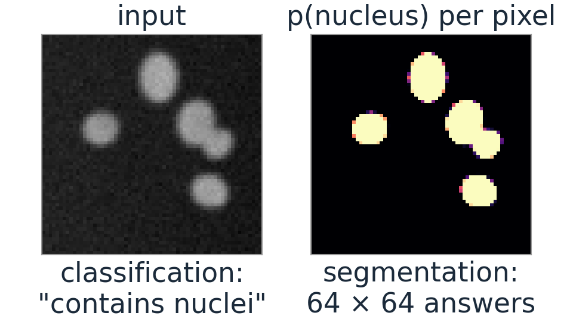
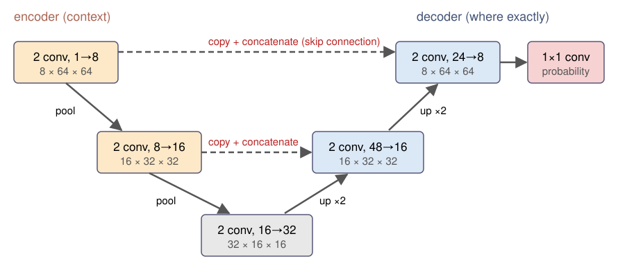
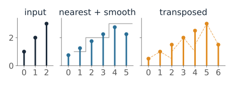
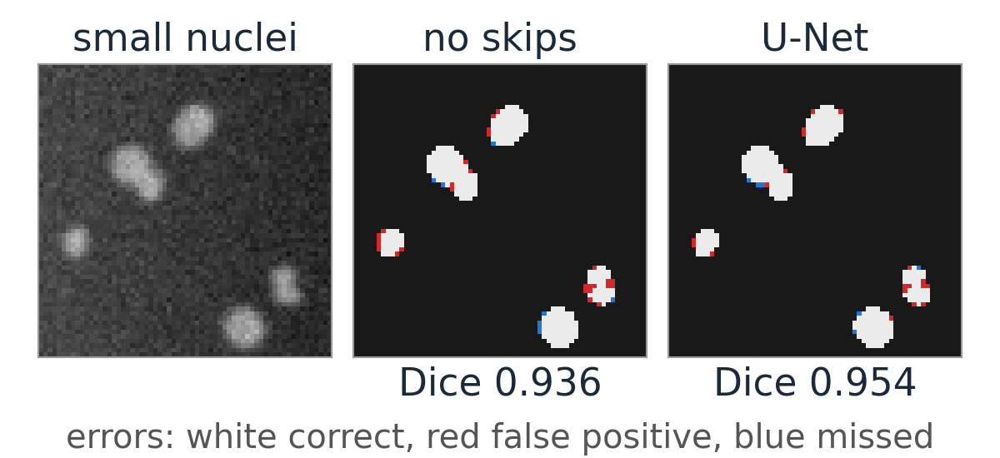
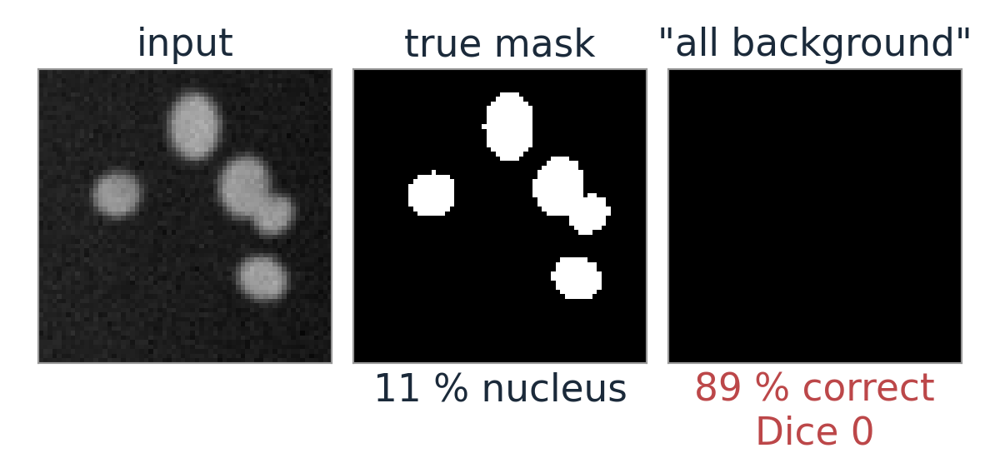
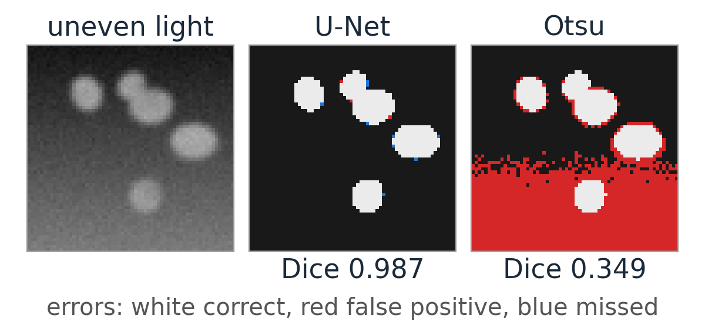
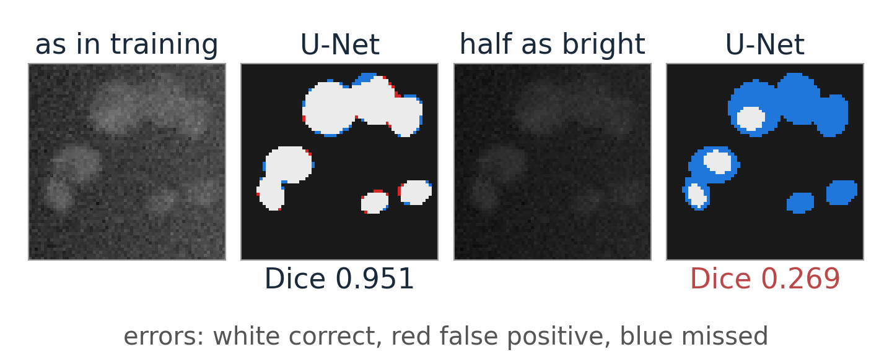
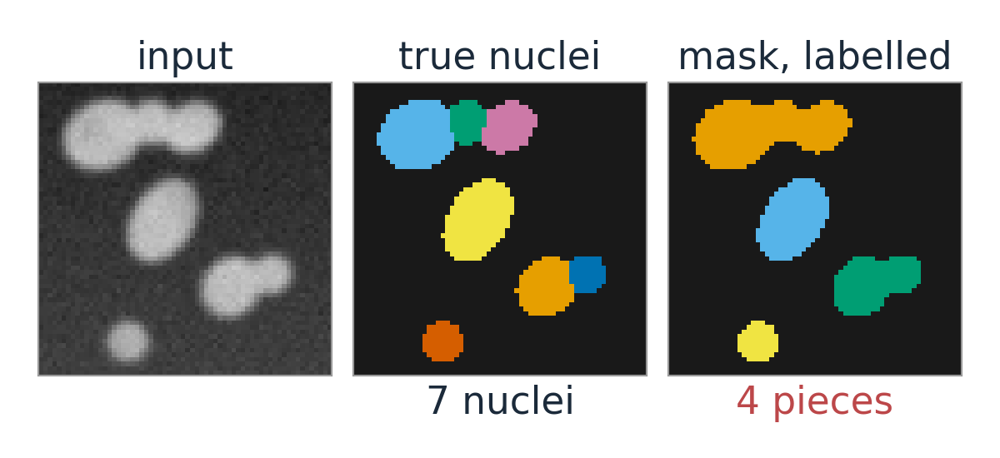

Output: one class probability per pixel, an image of the same size as the input.
Naive way: classify a patch around every pixel with the network of the last unit. Slow (one network run per pixel), and the patch is small, so the context is small.
Better: a network that is convolutional all the way: no dense layer, so it takes any image size and gives a map out.
The problem: pooling made the maps small (64 \to 16 pixels). We need to get back to full resolution.

Encoder–decoder

Encoder (left): convolutions and pooling, as in the last unit. The maps get smaller and see more context.
Decoder (right): upsample (each pixel becomes 2 \times 2), then convolutions that sharpen the result. Back to 64 \times 64, one probability per pixel.
Upsampling by hand
1D signal (1, 2, 3), upsampled by 2:
Nearest neighbour: (1, 1, 2, 2, 3, 3). Blocky; a following convolution smooths it, e.g. with (\tfrac14, \tfrac12, \tfrac14): (0.75, 1.25, 1.75, 2.25, 2.75, 2.25) (zero beyond the ends).
Transposed convolution with stride 2: each input value stamps a weighted copy of the kernel into the output, 2 steps apart. With the kernel (\tfrac12, 1, \tfrac12):
(0.5,\ 1,\ 1.5,\ 2,\ 2.5,\ 3,\ 1.5)
linear interpolation. With a learned kernel the network chooses its own way to upsample.

The math: transposed convolution
A strided convolution is a matrix A (banded, rows s positions apart): \mathbf y = A\mathbf x maps n to about n/s values.
The transposed convolution applies A^\top: from n/s values back to n. Each input value adds the kernel, scaled by itself, to the output: “stamping”.
Output length (n - 1)s + k - 2p: for n = 3, s = 2, k = 3, p = 0: 7.
It is the same operation that backpropagation uses to send gradients back through a strided convolution. A^\top is not the inverse A^{-1}: it does not undo the convolution, it only goes back to the larger size.
Skip connections: the U-Net
A decoder that only gets the bottleneck knows what is where, roughly; the exact boundaries were lost in pooling.
U-Net (Ronneberger, Fischer and Brox, 2015): copy the encoder’s feature maps of each size across to the decoder and concatenate them with the upsampled maps.
Context comes from below (deep, coarse maps), detail from the side (shallow, sharp maps).
In the demo network: 32 upsampled channels + 16 copied = 48 channels into the decoder at 32 \times 32; 16 + 8 = 24 at 64 \times 64.

Try it: a U-Net segments nuclei
Per-pixel loss
Cross-entropy per pixel, averaged over all pixels: every pixel is one classification example.
Class imbalance: if nuclei are 5 % of the pixels, “everything is background” is 95 % correct (recall “accuracy lies”, thresholding day). Its cross-entropy is not very large either.
Remedies: weight the object pixels more, or use the Dice loss: 1 − soft Dice, computed from the probabilities so that it has a gradient.
Recall (thresholding day): Dice = 2|P \cap G|/(|P| + |G|) of a predicted mask P and the truth G; IoU = |P \cap G|/|P \cup G|.

The math: soft Dice and its gradient
With probabilities p_i \in [0, 1] and the true mask g_i \in \{0, 1\}:
For hard 0/1 predictions D is the usual Dice. The loss depends only on the object pixels and the predicted object area: the background count does not dilute it.
Weighted cross-entropy: -\frac1N\sum_i\big[w_1g_i\log p_i + w_0(1 - g_i)\log(1 - p_i)\big], with e.g. w_c \propto 1/(\text{share of class } c).
(Milletari, Navab and Ahmadi, 2016.)
Evaluating a segmentation network
Dice and IoU against the ground truth, on held-out images (never seen in training or tuning).
Look at the errors, not only at the number: where are the false positives and negatives? Merged nuclei, missed dim nuclei and boundary pixels are different problems.
The number hides the distribution: a few failed images can disappear in an average over many good ones.
How to build an honest test set, and object-level scores (matched nuclei, F1): the evaluation day (day 37).

Data: annotation is the bottleneck
Every training image needs a mask drawn by hand: hours per image for dense nuclei.
Small networks and augmentation (flips, rotations, brightness, noise, elastic deformation) go a long way with tens of annotated images: the original U-Net was trained on 30.
Synthetic images with known truth (as in the demo) are good for teaching and testing, but real images differ: blur, debris, textures the generator never made.
A network knows only its training range: a dimmer microscope, more noise, another stain can break it. The demo’s sliders show this; days 37 and 39 come back to it.

After the mask
Touching nuclei come out as one blob: a semantic mask says “nucleus or not”, not “which nucleus”. Classic fix: a third class “boundary between nuclei”, then labelling or the watershed (days 14–15). Networks that output separate objects directly: day 39.

The probability map is a perfect data term for a graph cut (day 27): D_p(\ell) = -\log p_\ell, plus a smoothness term. The two ideas combine.
The baseline to beat: a random forest on the feature stack (day 33) with a few strokes of annotation. Often it is good enough, and it needs much less data.
Summary
Idea
In one line
Encoder–decoder
shrink for context, upsample back to one probability per pixel
Upsampling
nearest + convolution, or transposed convolution (“stamping” the kernel)
U-Net
skip connections copy encoder maps to the decoder: context + detail
Per-pixel loss
cross-entropy per pixel; Dice loss or class weights against imbalance
Evaluation
Dice / IoU on held-out images, and look at the errors
Limits
needs annotations; only knows its training range; semantic, not instance masks